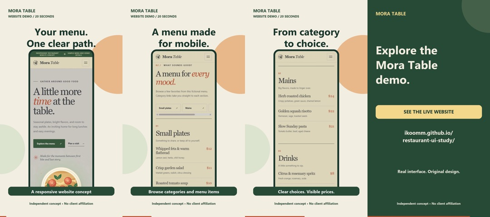
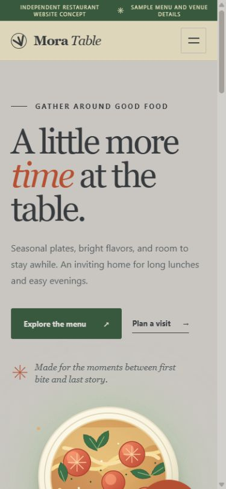
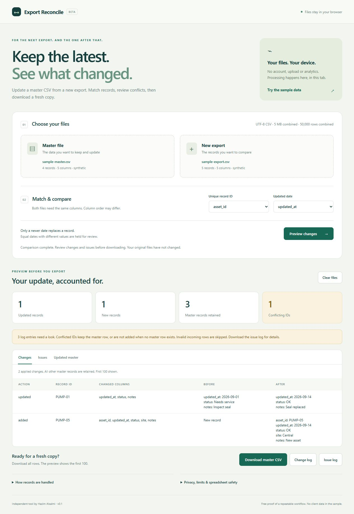

Local service · Concept project
A restaurant menu
worth exploring.
Mora Table brings a responsive website and two short video hooks into one inspectable concept.
- Responsive website
- 2 × MP4 hooks
- Source files
Clear creative. Useful websites. Less repetitive work.
A founder-led studio using AI to build, and careful checks to deliver.
Led by Hazim Alsalmi · Saudi Arabia · English & Arabic


For small teams with a specific bottleneck.
One clear scope. Inspectable work. A useful handoff.
Three independent projects. Each shows what exists, how it was made and what would be measured in a real engagement.

Local service · Concept project
Mora Table brings a responsive website and two short video hooks into one inspectable concept.
Software · Internal product
A working, browser-local CSV tool that checks conflicts before producing an updated export.
Commerce analytics · Demo
Separate Meta Ads and GA4 examples, weighted metrics and short factual summaries. Every number traces to a synthetic source.
Three service families. A written scope comes before a commitment. Existing marketplace conversations stay on their original platform.
Turn approved product screens and copy into a small, coherent creative set.
One 20-second MP4 with two opening hooks from up to three supplied screens, two static crops, one revision, five business days after materials. Editable Python/SVG source; no filming, voice clone or native After Effects file.
Core: a scoped launch kit. Ongoing: monthly creative iterations after a successful pilot; separately quoted against actual volume.
Discuss a creative pilot ↗Make one page easier to understand, navigate and act on.
One responsive static page, up to five sections, supplied brand assets and copy, one review round, editable source and handoff. Seven business days after complete materials. Hosting fees, checkout, backend and promised conversion uplift excluded.
Core: a defined multi-page site. Ongoing: maintenance and measured experiments once traffic and tracking exist.
Discuss a website sprint ↗Replace one recurring spreadsheet chore with something repeatable and checked.
One supplied CSV or Sheets export, up to 5,000 rows and 20 columns, five agreed metrics, one report view, reproducible script and handoff. One revision, five business days after scope and sample. Live API integrations and native Looker/n8n delivery quoted separately after access checks.
Core: one monitored workflow or multi-source report. Ongoing: maintenance after real run volume and error modes are measured.
Discuss a reporting pilot ↗These are introductory studio scopes, not measured market demand or guaranteed results. Larger work gets a separate written quote. Earlier accepted quotes remain unchanged.
You work directly with Hazim. Specialist AI tools assist research, production and review; they are not presented as employees.
Agree the deliverable, source format, inputs, exclusions, review rounds and acceptance checks. No surprise scope.
Use the right existing tools. Keep your context and assets in an isolated workspace. Ask for the least access needed.
Run relevant checks, show the actual output and resolve the agreed revision. Flag anything still unverified.
Deliver usable files, source where agreed, setup instructions and known limits. Continue only when there is useful work to measure.
Python and JavaScript for repeatable work; Figma for supported editable design; GitHub for source and evidence. OpenAI and Anthropic routing is being prototyped offline. Live model-to-model orchestration is not yet deployed.
Inspect our public source ↗Send one page, one task or one reporting problem. For a free fit check, I’ll look at the public link and identify up to three useful next steps.
اكتب المطلوب بالعربي أو الإنجليزي. نحدد النتيجة والنطاق والسعر قبل البدء.
No credentials or confidential files here. This form prepares an email in your mail app; it does not send or store your brief on a server.